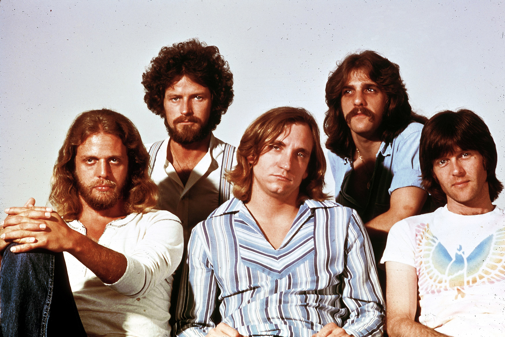
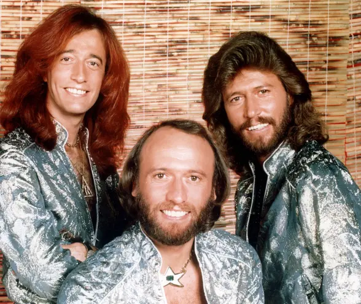

Rock
Energetic and powerful sounds from the best rock artists.

Artist: Queen | Album: News of the World | Song: We Are the Champions
Queen are a British rock band formed in London in 1970 by Freddie Mercury (lead vocals, piano), Brian May (guitar, vocals), and Roger Taylor (drums, vocals), later joined by John Deacon (bass).

Artist: Eagles | Album: Hotel California | Song: Hotel California
The Eagles are an American rock band formed in Los Angeles in 1971. With five number-one singles, six number-one albums, six Grammy Awards and five American Music Awards, the Eagles were one of the most successful musical acts of the 1970s in North America and are one of the world's best-selling music artists, having sold more than 200 million records worldwide,[1] including 100 million sold in the US alone.

Artist: Bee Gees | Album: Saturday Night Fever | Song: How Deep Is Your Love
The Bee Gees were a musical group formed in 1958 by brothers Barry, Robin, and Maurice Gibb. The trio were especially successful in popular music in the late 1960s and early 1970s, and later as prominent performers in the disco music era in the mid-to-late 1970s.